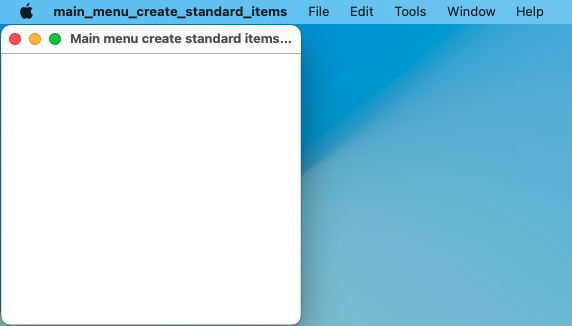

|
xtd
0.2.0
|
main_menu_create_standard_items.cpp
demonstrates the use of xtd::forms::main_menu::create_standard_items method.
- Windows


- macOS
- 

- Gnome


#include <xtd/forms/application>
#include <xtd/forms/form>
#include <xtd/forms/list_box>
#include <xtd/forms/main_menu>
using namespace std;
using namespace xtd;
using namespace xtd::forms;
namespace main_menu_create_standard_items_example {
public:
form1() {
text("Main menu create standard items example");
menu(main_menu1);
list_box1.parent(*this);
list_box1.dock(dock_style::fill);
}
private:
list_box1.items().push_back(ustring::format("{} clicked", as<menu_item>(sender).text()));
list_box1.selected_index(list_box1.items().size() - 1);
// Index 0 corresponds to the file menu and index 9 corresponds to the file exit menu.
if (main_menu1.menu_items()[0].get().menu_items()[9].get() == sender) application::exit();
}
main_menu main_menu1 = main_menu::create_standard_items({*this, &form1::on_menu_click});
list_box list_box1;
};
}
auto main()->int {
application::enable_menu_images();
application::run(main_menu_create_standard_items_example::form1 {});
}
xtd::forms::style_sheets::control form
The form data allows you to specify the box of a form control.
Definition: form.h:21
@ text
The xtd::forms::status_bar_panel displays text in the standard font.
The xtd::forms namespace contains classes for creating Windows-based applications that take full adva...
Definition: about_box.h:13
The xtd namespace contains all fundamental classes to access Hardware, Os, System,...
Definition: system_report.h:17
Generated on Sun Oct 1 2023 07:46:01 for xtd by Gammasoft. All rights reserved.